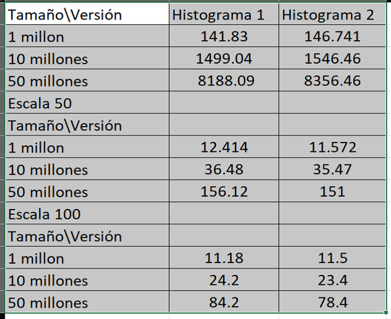

INFORME HISTOGRAMA CUDA PROYECTO GPU
Rebeca Maestro López

INTRODUCCIÓN:
Este es un informe sobre el trabajo realizado en el modulo 3: Programación en GPUs de la asignatura de Arquitecturas Avanzadas y de Propósito Específico. Consiste en realizar un histograma de un vector V de un número elevado N de elementos enteros aleatorios.
El histograma consiste en un vector H que tiene M elementos que representan "cajas". En cada caja se cuenta el número de veces que ha aparecido un elemento del vector V con el valor adecuado para asignarlo a esa caja (normalmente cada caja representa un rango o intervalo de valores).
Se han realizado 2 implementaciones, la implementación base y la segunda implementación de acuerdo a las instrucciones señaladas.
CARACTERÍSTICAS DEL PROYECTO:
El trabajo se divide en 2 ficheros con las distintas versiones del código.
- histograma1.cu
- histograma2.cu
En el fichero histograma1.cu se encuentra la implementación base en la cual se crea tantos hilos como elementos de V para que cada uno se encargue de ir al elemento que le corresponda en V e incremente la caja que corresponda en el vector histograma H de forma atómica.
En el fichero histograma2.cu se divide la operación de histograma en dos fases. En la primera, en lugar de trabajar sobre un único histograma global, repartiremos el cálculo realizando un cierto número de histogramas, cada uno calculado sobre una parte del vector de datos. La segunda fase realizará la suma de los histogramas locales en un único histograma global final.
EXPLICACIÓN DEL CÓDIGO:
Funcion histograma implementación base
Con un único histograma compartido, se emplea la suma atómica para asegurar la concurrencia.
__global__ void histograma(int threadsPerBlock, int blocksPerGrid){ int iteraciones= SCALA; if(blocksPerGrid-1 == blockIdx.x && threadIdx.x == threadsPerBlock -1){ iteraciones = iteraciones + (N % SCALA); } unsigned id_x = blockIdx.x*blockDim.x + threadIdx.x; for(int i = 0; i < iteraciones; i++){ if(id_x*SCALA+i < N){ int mod = vector_V[id_x*SCALA+i]%M; atomicAdd(&vector_H[mod],1); } } }
Funcion histograma segunda implementación
Para cada hilo se tiene un vector local que modifican, una vez que el hilo termina de hacer las asignaciones correspondientes lo asigna al vector H del histograma global , así se consiguen menos escrituras. Además se asignan más operaciones a cada hilo con la variable SCALA como optimización.
__global__ void histograma(int threadsPerBlock, int blocksPerGrid){ int vector[M]; for(int i =0; i < M;i++){ vector[i] =0; } int iteraciones= SCALA; if(blocksPerGrid-1 == blockIdx.x && threadIdx.x == threadsPerBlock -1){ iteraciones = iteraciones + (N % SCALA); } unsigned id_x = blockIdx.x*blockDim.x + threadIdx.x; for(int i = 0; i < iteraciones; i++){ if(id_x*SCALA+i < N){ int mod = vector_V[id_x*SCALA+i]%M; vector[mod]++; } } for(int i =0; i < M;i++){ int a =vector[i]; atomicAdd(&vector_H[i],a); } }
Funcion inicializa valores random
Usando curandState y las funciones curand_init y curand_uniform asignamos valores aletorios al vector V.
/** * Kernel para inicializacion de datos de entrada */ __global__ void inicializa_v(int random, curandState *states, int threadsPerBlock, int blocksPerGrid){ int iteraciones= SCALA; if(blocksPerGrid-1 == blockIdx.x && threadIdx.x == threadsPerBlock -1){ iteraciones = iteraciones + (N % SCALA); } unsigned id_x = blockIdx.x*blockDim.x + threadIdx.x; curandState *state = states + id_x; curand_init(random, id_x, 0, state); for(int i = 0; i < iteraciones; i++){ if(id_x*SCALA+i < N){ vector_V[id_x*SCALA+i] = (int)((curand_uniform(state)*1000)) % M; } } }
MEDICIÓN DE LOS TIEMPOS
Para controlar y medir el tiempo que conlleva el trabajo realizado usamos cudaEvent y tomamos registro del tiempo mínimo, máximo y de la media, a base de realizar multiples repeticiones del codigo.
cudaEvent_t start,stop; cudaEventCreate(&start); cudaEventCreate(&stop); for(int j = 0; j< REPETICIONES; j++){ CUDA_CHECK_RETURN(cudaEventRecord(start, 0)); CUDA_CHECK_RETURN(cudaMalloc((void **)&states, sizeof(curandState) * threadsPerBlock * blocksPerGrid)); inicializa_v<<<blocksPerGrid, threadsPerBlock>>>(rand(),states, threadsPerBlock,blocksPerGrid); CUDA_CHECK_RETURN(cudaGetLastError()); inicializa_h<<<1,M>>>(); CUDA_CHECK_RETURN(cudaGetLastError()); histograma<<<blocksPerGrid,threadsPerBlock>>>(threadsPerBlock,blocksPerGrid); CUDA_CHECK_RETURN(cudaGetLastError()); CUDA_CHECK_RETURN(cudaMemcpyFromSymbol(h_v_h, vector_H, M*sizeof(int))); int acumula =0; for(int i = 0; i<M; i++){ std::cout<<h_v_h[i]<<" "; acumula += h_v_h[i]; } std::cout<<"\n-------------------------"<<acumula<<"-----------------------------------\n"; CUDA_CHECK_RETURN(cudaFree(states)); CUDA_CHECK_RETURN(cudaEventRecord(stop, 0)); CUDA_CHECK_RETURN(cudaEventSynchronize(stop)); CUDA_CHECK_RETURN(cudaEventElapsedTime(&t_duration[j],start,stop)); }
RESULTADOS:
Hemos realizado pruebas con distintos tamaño y distintas escalas para las dos versiones del histograma.

En primer lugar con ESCALA 1 , que sería como asignar una operación a cada hilo, las dos versiones son altamente ineficientes de hecho es interesante ver que usando histogramas locales en la segunda versión, eso solo añade tiempo extra ya que no se aprovechan de eso los hilos.
Con ESCALA 50 y ESCALA 100 se consigue una gran mejora de los tiempos y se notan las diferencias entre versiones, que empiezan a ser significativas cuando superas los 50 millones de datos. Vemos que todavía no se alcanza el pico óptimo entre asignación de trabajo a cada hilo y número de hilos, pero entorno a ESCALA 1000 los resultados empezaban a decaer.
Por tanto conseguir un balance entre el trabajo de los hilos y el número de hilos es clave para la optimización pero también las mejoras con los histogramas locales son significativas cuando aumenta mucho el tamaño de los datos.